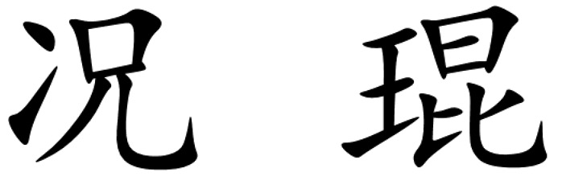

Kun KUANG 
Associate Professor |
Biography
I'm an Associate Professor of the College of Computer Science and Technology at Zhejiang University. I got my Ph.D. in the Department of Computer Science and Technology at Tsinghua University in 2019, coadvised by Prof. Shiqiang Yang and Prof. Peng Cui. From Sep. 2017 to Sep. 2018, I visited Prof. Susan Athey's group at Stanford University as a visiting student. I am also lucky to work with Prof. Bo Li and Prof. Wenwu Zhu at Tsinghua University.
Research Interests
My research interests include causal inference, machine learning, and data mining. In particular, I am interested in promoting the convergence of causal inference and machine learning, including improving the effectiveness of causal inference with machine learning technologies, and bringing stability and interpretability of machine learning with causal inference technologies.
I am looking for highly-motivated students to work with me. If interested, please contact me with your detailed CV!
News
- We published a survey paper on Instrumental Variables here, and develop a toolkit of IVs methods.
- [2023.02] One paper was accepted by TPAMI on Causal Recommendation.
- [2023.01] Two papers were accepted by TheWebConf 2023.
- [2023.01] One paper was accepted by ICLR 2023 on Fairness-aware Contrastive Learning.
- [2022.11] Three papers were accepted by AAAI 2023.
- [2022.11] One paper was accepted by IJCV on Domain Generalization.
- [2022.10] Two papers were accepted by EMNLP 2022.
- [2022.09] Two papers were accepted by NeurIPS 2022.
- [2022.06] One paper was accepted by MM 2022 on Label-Efficient Domain Generalization.
- [2022.05] Three papers were accepted by KDD 2022.
- [2022.05] Three papers were accepted by ICML 2022 on Causality Regularized Learning.
- [2022.04] One paper was accepted by TKDE on causal feature selection for stable prediction.
- [2022.03] One paper was accepted by DMKD on treatment effect estimation by differentiated matching.
- [2022.03] One paper was accepted by ICDE on Bias-Aware Graph Neural Network.
- [2022.02] One paper was accepted by TKDE on treatment effect estimation.
Tutorials and Invited Talk
- [2022.09] I gave a invited talk on Causal Inference with Instrumental Variables in PIPC 2022.
- [2021.07] I gave a invited talk on Causal Inference in Observational Studies in MLMI 2021.
- [2019.07] I gave a tutorial on Causal Inference and Stable Learning in ICME 2019, together with Peng Cui and Bo Li.
- [2019.04] I gave a tutorial on Causally Regularized Machine Learning in PAKDD 2019, together with Peng Cui and Bo Li.
Selected Publications
Working papers- Anpeng Wu, Kun Kuang*, Ruoxuan Xiong, Fei Wu. Instrumental Variables in Causal Inference and Machine Learning: A Survey, arxiv, 2022.
- Shengyu Zhang, Fuli Feng, Kun Kuang*, Wenqiao Zhang, Zhou Zhao, Hongxia Yang, Tat-Seng Chua, Fei Wu. Personalized Latent Structure Learning for Recommendation, TPAMI, 2023.
- Zheqi Lv, Wenqiao Zhang, Shengyu Zhang, Kun Kuang*, Feng Wang, Yongwei Wang, Zhengyu Chen, Tao Shen, Hongxia Yang, Beng Chin Ooi and Fei Wu. DUET: A Tuning-Free Device-Cloud Collaborative Parameters Generation Framework for Efficient Device Model Generalization, The WebConf, 2023.
- Dingyuan Zhu, Daixin Wang, Zhiqiang Zhang, Kun Kuang, Yan Zhang, Yulin Kang and Jun Zhou. Graph Neural Network with Two Uplift Estimators for Label-Scarcity Individual Uplift Modeling, The WebConf, 2023.
- Fengda Zhang, Kun Kuang*, Long Chen, Yuxuan Liu, Chao Wu, Jun Xiao. Fairness-aware Contrastive Learning with Partially Annotated Sensitive Attributes, ICLR, 2023.
- Anpeng Wu, Kun Kuang*, Ruoxuan Xiong, Minqin Zhu, Yuxuan Liu, Bo Li, Furui Liu, Zhihua Wang, Fei Wu. Learning Instrumental Variable from Data Fusion for Treatment Effect Estimation, AAAI, 2023.
- Qi Tian, Kun Kuang*, Furui Liu, Baoxiang Wang. Learning From Good Trajectories in Offline Multi-Agent Reinforcement Learning, AAAI, 2023.
- Yingjie Jiang, Ying Wei, Fei Wu, Zhengxing Huang, Kun Kuang, Zhihua Wang. Learning Chemical Rules of Retrosynthesis with Pre-training, AAAI, 2023.
- Junkun Yuan, Xu Ma, Defang Chen, Kun Kuang*, Fei Wu, Lanfen Lin. Domain-Specific Bias Filtering for Single Labeled Domian Generalization, IJCV, 2022.
- Jiashuo Liu, Zheyan Shen, Peng Cui, Linjun Zhou, Kun Kuang and Bo Li. Distributionally Robust Learning with Stable Adversarial Training, TKDE, 2022.
- Fengda Zhang, Kun Kuang*, Long Chen, Zhaoyang You, Tao Shen, Jun Xiao, Yin Zhang, Chao Wu, Fei Wu, Yueting Zhuang, Xiaolin Li. Federated unsupervised representation learning, FITEE, 2022.
- Yiquan Wu, Yifei Liu, Weiming Lu, Yating Zhang, Jun Feng, Changlong Sun, Fei Wu, Kun Kuang*. Towards Interactivity and Interpretability: A Rationale-based Legal Judgment Prediction Framework, EMNLP, 2022.
- Chengyuan Liu, Leilei Gan, Kun Kuang*, Fei Wu. Investigating the Robustness of Natural Language Generation from Logical Forms via Counterfactual Samples, EMNLP, 2022.
- Qi Tian, Kelu Jiang, Kun Kuang*, Furui Liu, Zhihua Wang, Fei Wu. ConfounderGAN: Protecting Image Data Privacy with Causal Confounder, NeurIPS, 2022.
- Yemin Yu, Ying Wei, Kun Kuang, Zhengxing Huang, Huaxiu Yao, Fei Wu. GRASP: Navigating Retrosynthetic Planning with Goal-driven Policy, NeurIPS, 2022.
- Junkun Yuan, Xu Ma, Defang Chen, Kun Kuang*, Fei Wu, Lanfen Lin. Label-Efficient Domain Generalization via Collaborative Exploration and Generalization, ACM MM, 2022.
- Jiangchao Yao, Shengyu Zhang, Yang Yao, Feng Wang, Jianxin Ma, Jianwei Zhang, Yunfei Chu, Luo Ji, Kunyang Jia, Tao Shen, Anpeng Wu, Fengda Zhang, Ziqi Tan, Kun Kuang, Chao Wu, Fei Wu, Jingren Zhou, Hongxia Yang. Edge-Cloud Polarization and Collaboration: A Comprehensive Survey for AI, TKDE 2022.
- Fengda Zhang, Kun Kuang*, Yuxuan Liu, Long Chen, Jiaxun Lu, yunfeng shao, Fei Wu, Chao Wu, Jun Xiao. Towards Multi-level Fairness and Robustness on Federated Learning, ICML 2022 workshop.
- Yuxuan Si, Zhengqing Fang, Kun Kuang*, Zhengxing Huang, Yu-Feng Yao, Fei Wu. Disentangled Sequential Autoencoder with Local Consistency for Infectious Keratitis Diagnosis, ICIP, 2022.
- Haotian Wang, Wenjing Yang, Longqi Yang, Anpeng Wu, Liyang Xu, Jing Ren, Fei Wu, Kun Kuang*. Estimating Individualized Causal Effect with Confounded Instruments, KDD, 2022.
- Shuang Luo, Yinchuan Li, Jiahui Li, Kun Kuang*, Furui Liu, Yunfeng Shao, Chao Wu. S2RL: Do We Really Need to Perceive All States in Deep Multi-Agent Reinforcement Learning?, KDD, 2022.
- Jiannan Guo, Yangyang kang, Yu Duan, Xiaozhong Liu, Siliang Tang, Wenqiao Zhang, Kun Kuang, Changlong Sun, Fei Wu. Collborative Intelligence Orchestration: Inconsistency-Based Fusion of Semi-Supervised Learning and Active Learning, KDD, 2022.
- Anpeng Wu, Kun Kuang*, Bo Li, Fei Wu. Instrumental Variable Regression with Confounder Balancing, ICML, 2022.
- Jiahui Li, Kun Kuang*, Baoxiang Wang, Furui Liu, Long Chen, Changjie Fan, Fei Wu, Jun Xiao. Deconfounded Value Decomposition for Multi-Agent Reinforcement Learning, ICML, 2022.
- Yinjie Jiang, Zhengyu Chen, Luotian Yuan, Kun Kuang*, Xinhai Ye, Zhihua Wang, Fei Wu, Ying Wei. The Role of Deconfounding in Meta-learning, ICML, 2022.
- Kun Kuang, Haotian Wang, Yue Liu, Ruoxuan Xiong, Weiming Lu, Bo Li, Runze Wu, Yueting Zhuang, Fei Wu, Peng Cui. Stable Prediction with Leveraging Seed Variable, IEEE Transaction on Knowledge and Data Engineering (TKDE) , 2022 (to appear).
- Ziyu Zhao, Kun Kuang*, Bo Li, Peng Cui, Runze Wu, Jun Xiao, Fei Wu. Differentiated Matching for Individual and Average Treatment Effect Estimation, Data Mining and Knowledge Discovery (DMKD) , 2022 (to appear).
- Anpeng Wu, Junkun Yuan, Kun Kuang*, Bo Li, Runze Wu, Qiang Zhu, Yueting Zhuang, Fei Wu. Learning Decomposed Representations for Treatment Effect Estimation, IEEE Transaction on Knowledge and Data Engineering (TKDE), 2022 (to appear).
- Ming Kong, Zhengxing Huang, Kun Kuang, Qiang Zhu, Fei Wu. TranSQ: Transformer-based Semantic Query for Medical Report Generation, Medical Image Computing and Computer Assisted Interventions (MICCAI), 2022 (to appear).
- Leilei Gan, Yuxian Meng, Kun Kuang, Xiaofei Sun, Chun Fan, Fei Wu, Jiwei Li. Dependency Parsing as MRC-based Span-Span Prediction, ACL , 2022.
- Zhengyu Cheng, Teng Xiao, Kun Kuang*. BA-GNN: On Learning Bias-Aware Graph Neural Network, ICDE, 2022.
- Ziqi Tan, Shengyu Zhang, Nuanxin Hong, Kun Kuang*, Yifan Yu, Zhou Zhao, Jin Yu, Hongxia Yang, Shiyuan Pan, Jingren Zhou, Fei Wu. Uncovering Causal Effects of Online Short Videos on Consumer Behaviors, WSDM, 2022.
- Junkun Yuan, Anpeng Wu, Kun Kuang*, Bo Li, Runze Wu, Fei Wu, and Lanfen Lin. Auto IV: Counterfactual Prediction via Automatic Instrumental Variable Decomposition, Transactions on Knowledge Discovery from Data (TKDD) , 2021.
- Kun Kuang, Yunzhe Li, Bo Li, Peng Cui, Jianrong Tao, Hongxia Yang, and Fei Wu. Continuous Treatment Effect Estimation via Generative Adversarial De-confounding, Data Mining and Knowledge Discovery (DMKD) , 2021.
- Kun Kuang, Hengtao Zhang, Runze Wu, Fei Wu, Yueting Zhuang and Aijun Zhang*. Balance-Subsampled Stable Prediction across Unknown Test Data, Transactions on Knowledge Discovery from Data (TKDD) , 2021.
- Jiannan Guo, Haochen Shi, Yangyang Kang, Kun Kuang, Siliang Tang, Zhuoren Jiang, Changlong Sun, Fei Wu, Yueting Zhuang. Semi-supervised Active Learning for Semi-supervised Models: Exploit Adversarial Examples with Graph-based Virtual Labels, ICCV, 2021.
- Jiahui Li, Kun Kuang*, Lin Li, Long Chen, Songyang Zhang, Jian Shao, Jun Xiao. Instance-wise or Class-wise? A Tale of Neighbor Shapley for Concept-based Explanation, ACM MM, 2021.
- Tiankai Gu, Kun Kuang, Hong Zhu, Jingjie Li, Zhenhua Dong, Wenjie Hu, Zhenguo Li, Xiuqiang He, Yue Liu. Estimating True Post-Click Conversion via Group-stratified Counterfactual Inference, KDD 2021 Workshop.
- Qi Tian, Kun Kuang*, Kelu Jiang, Fei Wu, and Yisen Wang*. Analysis and Applications of Class-wise Robustness in Adversarial Training, KDD, 2021.
- Jiahui Li, Kun Kuang*, Baoxiang Wang, Furui Liu, Long Chen, Fei Wu, and Jun Xiao. Shapley Counterfactual Credits for Multi-Agent Reinforcement Learning, KDD, 2021.
- Xin Wang, Shuyi Fan, Kun Kuang, and Wenwu Zhu. Towards Explainable Automated Graph Representation Learning with Hyperparameter Importance Explanation, ICML, 2021.
- Yuxiao Lin, Yuxian Meng, Xiaofei Sun, Qinghong Han, Kun Kuang, Jiwei Li, Fei Wu. BertGCN: Transductive Text Classification by Combining GCN and BERT, ACL, 2021.
- Leilei Gan, Kun Kuang*, Yi Yang, and Fei Wu*. Judgment Prediction via Injecting Legal Knowledge into Neural Networks, AAAI, 2021.
- Jiashuo Liu, Zheyan Shen, Peng Cui, Linjun Zhou, Kun Kuang, Bo Li and Yishi Lin. Invariant Adversarial Learning for Distributional Robustness, AAAI, 2021.
- Kun Kuang, Peng Cui, Hao Zou, Bo Li, Jianrong Tao, Fei Wu, and Shiqiang Yang. Data-Driven Variable Decomposition for Treatment Effect Estimation, IEEE Transaction on Knowledge and Data Engineering (TKDE) , 2020 (to appear).
- Kun Kuang, Lian Li, Zhi Geng, Lei Xu, Kun Zhang, Beishui Liao, Huaxin Huang, Peng Ding, Wang Miao, and Zhichao Jiang. Causal Inference, In Engineering, 2020 (IF=6.4). [In Chinese]
- Fashen Li, Lian Li, Jianping Yin, Yong Zhang, Qingguo Zhou, and Kun Kuang. How to Interpret Machine Knowledge, In Engineering, 2020 (IF=6.4). [In Chinese]
- Mengze Li, Kun Kuang*, Qiang Zhu, Xiaohong Chen, Qing Guo, and Fei Wu. IB-M: A Flexible Framework to Align an Interpretable Model and a Black-box Model, BIBM, 2020.
- Yunzhe Li, Kun Kuang, Bo Li, Peng Cui, Jianrong Tao, Hongxia Yang, and Fei Wu. Continuous Treatment Effect Estimation via Generative Adversarial De-confounding, The KDD'20 Workshop on Causal Discovery.
- Yiquan Wu, Kun Kuang, and Fei Wu. Automatic Text Revision with Application to Legal Documents, The SIGIR'20 Workshop on Legal Intelligence.
- Yiquan Wu, Kun Kuang*, Yating Zhang, Xiaozhong Liu, Changlong Sun, Jun Xiao, Yueting Zhuang, Luo Si and Fei Wu. De-biased Court’s View Generation with Causality, EMNLP, 2020.
- Zhengqing Fang, Kun Kuang*, Yuxiao Lin, Fei Wu, and Yufeng Yao. Concept-based Explanation for Fine-grained Images and Its Application in Infectious Keratitis Classification, ACM MM, 2020.
- Shengyu Zhang, Tan Jiang, Tan Wang, Kun Kuang*, Zhou Zhao, Jianke Zhu, Jin Yu, Hongxia Yang, and Fei Wu. DeVLBert: Learning Deconfounded Visio-Linguistic Representations, ACM MM, 2020.
- Shengyu Zhang, Ziqi Tan, Jin Yu, Zhou Zhao, Kun Kuang*, Jie Liu, Jingren Zhou, Hongxia Yang, and Fei Wu.Poet: Product-oriented Video Captioner for E-commerce, ACM MM, 2020.
- Yufei Feng, Fuyu Lv, Binbin Hu, Fei Sun, Kun Kuang, Yang Liu, Qingwen Liu and Wenwu Ou.MTBRN: Multiplex Target-Behavior Relation Enhanced Network for Click-Through Rate Prediction, CIKM, 2020.
- Shengyu Zhang, Ziqi Tan, Jin Yu, Zhou Zhao, Kun Kuang, Tan Jiang, Jingren Zhou, Hongxia Yang, and Fei Wu. Comprehensive Information Integration Modeling Framework for Video Titling, KDD, 2020.
- Renzhe Xu, Peng Cui, Kun Kuang, Bo Li, Linjun Zhou, Zheyan Shen and Wei Cui. Algorithmic Decision Making with Conditional Fairness, KDD, 2020.
- Xiao Wang, Shaohua Fan, Kun Kuang, Chuan Shi, Jiawei Liu, and Bai Wang. Decorrelated Clustering with Data Selection Bias, In IJCAI, 2020.
- Kun Kuang, Ruoxuan Xiong, Peng Cui, Susan Athey, and Bo Li. Stable Prediction with Model Misspecification and Agnostic Distribution Shift, AAAI, 2020. [Code], [poster]
- Zheyan Shen, Peng Cui, Tong Zhang and Kun Kuang. Stable Learning of Linear Models via Sample Reweighting, AAAI, 2020.
- Kun Kuang, Peng Cui, Bo Li, Meng Jiang, Fei Wu, and Shiqiang Yang. Treatment Effect Estimation via Differentiated Confounder Balancing and Regression, Transactions on Knowledge Discovery from Data (TKDD) , 2019.
- Kun Kuang, Meng Jiang, Peng Cui, Hengliang Luo and Shiqiang Yang. Effective promotional strategies selection in social media: A data-driven approach, IEEE Transactions on Big Data (TBD) , 2017.
- Hao Zou, Kun Kuang*, Boqi Chen, Peng Cui and Peixuan Chen. Focused Context Balancing for Robust Offline Policy Evaluation, KDD, 2019.
- Zhixiu Liu, Chengxi Zang, Kun Kuang, Hao Zou, Hu Zheng, Peng Cui. Causation-Driven Visualizations for Insurance Recommendation, ICME 2019 workshop.
- Jianxin Ma, Peng Cui, Kun Kuang, Xin Wang and Wenwu Zhu. Disentangled Graph Convolutional Networks. ICML, 2019. [code], [poster]
- Zheyan Shen, Peng Cui, Kun Kuang* and Bo Li. Causally Regularized Learning on Data with Agnostic Bias. ACM MM, 2018.
- Kun Kuang, Peng Cui, Susan Athey, Ruoxuan Xiong and Bo Li. Stable Prediction across Unknown Environments. KDD, 2018. [code], [slides]
- Kun Kuang, Peng Cui, Bo Li, Meng Jiang and Shiqiang Yang. Estimating Treatment Effect in the Wild via Differentiated Confounder Balancing. KDD, 2017. [code]
- Kun Kuang, Peng Cui, Bo Li, Meng Jiang, Shiqiang Yang and Fei Wang. Treatment Effect Estimation with Data-Driven Variable Decomposition. AAAI, 2017.
- Kun Kuang, Meng Jiang, Peng Cui and Shiqiang Yang. Steering Social Media Promotions with Effective Strategies. ICDM, 2016.
Selected Honors and Awards
Academic Service
Userful Links